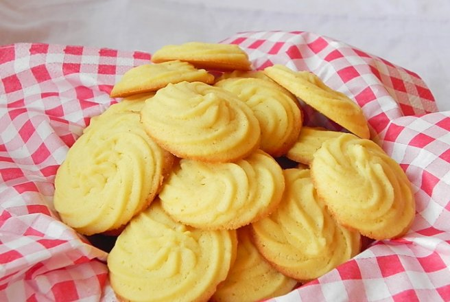

Recipe for biscuits!
Click here to return to the main page

Description
Who doesn't enjoy a nice and simple snack sometimes? What's even better is that these biscuits can be very easily made, so let's hop to it!
ingredients
For this recipe of simple biscuits we will need:
- 250g butter, softened
- 140g caster sugar
- 1 egg yolk
- 2 tsp vanilla extract
- 300g plain flour
Cooking step by step
Now that we have all the ingredients, let's start cooking!
- Mix the butter and sugar in a large bowl with a wooden spoon.
- Add the egg yolk and vanilla extract and briefly beat to combine.
- Sift over the flour and stir until the mixture is well combined.
- For basic vanilla biscuits: Pre-heat the oven to 180C/160C fan/gas 4.
- Chill the dough for 20 - 30minutes, roll out and cut out shapes as above.
- Bake on a non-stick baking tray for 10-12 minutes until pale golden.
- Carefully transfer to a wire rack to cool and crisp up.
Conclusion
Now we sit back and enjoy ourselves some tasty biscuits!